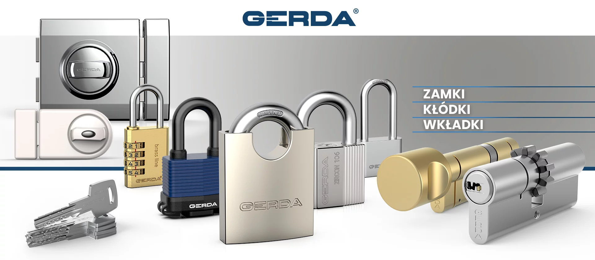

Wymiana zamków to jedna z najważniejszych inwestycji w bezpieczeństwo Twojego domu lub mieszkania. Niezależnie od tego, czy zamek się zepsuł, zgubiłeś klucze, przeprowadzasz się do nowego mieszkania, czy po prostu chcesz podnieść poziom zabezpieczeń — pomogę Ci wybrać i zamontować odpowiedni zamek.
Jako ślusarz w Lublinie z ponad 20-letnim doświadczeniem, pracowałem z tysiącami różnych zamków — od prostych cylindrów po zaawansowane systemy antywłamaniowe. Doradzam w wyborze i profesjonalnie montuję zamki najlepszych marek.
Z jakimi markami zamków pracuję?
Posiadam doświadczenie w pracy z zamkami wszystkich popularnych producentów dostępnych na polskim rynku:
- Gerda — najpopularniejsza polska marka zamków antywłamaniowych. Wkładki Gerda WKE1, SLR, Tedee Smart Lock
- LOB — solidne zamki i wkładki produkowane w Polsce. Dobre rozwiązanie w przystępnej cenie
- Mul-T-Lock — izraelskie zamki premium z unikalnym systemem klucza. Klasa 6 odporności na włamanie
- ABUS — niemiecka marka z szeroką gamą wkładek, kłódek i zabezpieczeń. Seria D6, D10, XP20S
- Yale — globalna marka z ofertą zarówno mechanicznych, jak i elektronicznych zamków
- Keso — szwajcarskie zamki o bardzo wysokiej odporności na kopiowanie kluczy
- Winkhaus — niemieckie zamki wielopunktowe do drzwi wejściowych
Kiedy wymienić zamek?
Oto najczęstsze sytuacje, w których klienci decydują się na wymianę zamka:
- Po zgubieniu kluczy — jeśli nie wiesz, kto może mieć dostęp do Twoich kluczy, wymiana zamka to jedyne bezpieczne rozwiązanie
- Po przeprowadzce — nigdy nie wiesz, ile kopii kluczy ma poprzedni właściciel lub najemca
- Po włamaniu — uszkodzony zamek trzeba wymienić na nowy, najlepiej o wyższej klasie zabezpieczeń
- Zacięty zamek — klucz obraca się ciężko, zamek nie domyka, mechanizm jest wyeksploatowany
- Podniesienie bezpieczeństwa — wymiana starszego zamka na nowoczesny antywłamaniowy z atestem
- Montaż dodatkowego zamka — dodatkowy zamek w drzwiach to znaczne podniesienie poziomu bezpieczeństwa
Zakres usług — zamki
Moje usługi w zakresie zamków obejmują:
- Wymiana wkładek bębenkowych — standardowe i antywłamaniowe, w drzwiach drewnianych i metalowych
- Wymiana zamków w drzwiach antywłamaniowych — w tym zamki Gerda z wielopunktowym ryglowaniem
- Naprawa zacinających się zamków — regulacja, smarowanie, wymiana zużytych elementów
- Montaż dodatkowych zamków — zamki nawierzchniowe, zasuwki, zamki na klucz patentowy
- Montaż wizjerów i samozamykaczy — kompletne wyposażenie drzwi wejściowych
- Wymiana szyldów i klamek — dostosowanie do nowego zamka
- Naprawa po włamaniu — wymiana uszkodzonych zabezpieczeń, wzmocnienie drzwi
Jak wybrać dobry zamek?
Przy wyborze zamka warto zwrócić uwagę na kilka kluczowych parametrów:
- Klasa odporności na włamanie — im wyższa klasa (do 6), tym trudniejszy do sforsowania
- System klucza — klucze patentowe nie dają się skopiować bez karty właściciela
- Typ drzwi — inne zamki sprawdzą się w drzwiach drewnianych, inne w stalowych antywłamaniowych
- Budżet — dobry zamek to inwestycja, ale istnieją dobre rozwiązania w różnych przedziałach cenowych
Chętnie doradzę bezpłatnie przy wyborze odpowiedniego zamka. Wystarczy zadzwonić i opisać swoją sytuację — podpowiem, jakie rozwiązanie będzie najlepsze.
Ile kosztuje wymiana zamka w Lublinie?
Koszt wymiany zamka składa się z ceny samego zamka/wkładki oraz robocizny. Orientacyjne ceny:
- Wymiana prostej wkładki bębenkowej: od 80-150 zł (z wkładką)
- Wymiana wkładki antywłamaniowej (Gerda, LOB): od 200-400 zł
- Wymiana zamka w drzwiach antywłamaniowych: od 300-600 zł
- Montaż dodatkowego zamka: od 150-300 zł
Dokładną wycenę podaję po ocenie sytuacji — możesz opisać problem telefonicznie lub przesłać zdjęcie zamka.